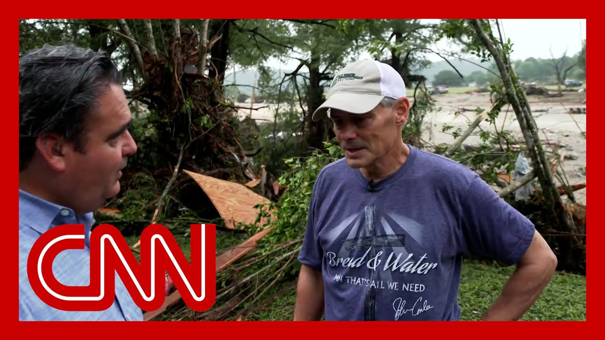

【CNN News 20250706 美国德州突发大洪水，一位寻找失踪女儿的父亲发出紧急恳求】
Summary: A desperate search continues in central Texas after flash floods swept through the area, leaving dozens missing, including 27 girls from Camp Mystic. At least 27 people have died, among them a 9-year-old girl and a camp director. A father, Ty Baden, searches for his 21-year-old daughter and her friends, who were swept away after their riverside home was destroyed. Rescue efforts persist amid catastrophic damage.
摘要： 得克萨斯州中部突发洪水后，数十人失踪，其中包括神秘营地的27名女孩，绝望的搜寻仍在继续。至少27人遇难，包括一名9岁女孩和一名营地负责人。父亲泰·巴登正在寻找被洪水冲走的21岁女儿及其朋友，他们的河边房屋已被摧毁。救援工作仍在灾难性破坏中持续进行。

⏱️ Estimated Reading Time: 13 min
📚 四级生词 📚 六级生词 📚 雅思生词 📚 托福生词 📚 专八生词 📚 SAT生词 📚 考研生词 📚 GRE生词 📚 高考生词 📚 其它生词生词
And we continue to follow breaking news out of central Texas.
我们继续关注得克萨斯州中部的最新突发新闻。
With this hour, a desperate search and rescue effort continues for dozens of people missing after flood waters inundated an area north of San Antonio.
目前，对圣安东尼奥北部洪水淹没地区数十名失踪人员的紧急搜救仍在进行。
Among the missing 27 young girls from a camp, Camp Mystic, one of many summer camps along the Guadalupe River.
失踪者中包括27名来自神秘营地的年轻女孩，该营地是瓜达卢佩河沿岸众多夏令营之一。
And this morning another round of heavy rainfall triggered more flash flood emergencies in the region.
今晨，新一轮强降雨在该地区引发了更多山洪紧急情况。
Others have been rescued, including this person who was clinging to a light pole.
其他人已被救出，包括这名紧紧抓住灯柱的人。
Officials say at least 27 people have died, nine children and 18 adults.
官方称至少27人遇难，包括9名儿童和18名成人。
Among the fatalities, nine-year-old Janie Hunt, her mother confirming to CNN today that the young girl who was among the two dozen missing from Camp Mystic, has died.
遇难者中包括9岁的珍妮·亨特，其母亲今日向CNN确认，这名在神秘营地失踪的女孩已身亡。
And also confirmed killed Jane Ragsdale.
同时确认遇难的还有简·拉格斯代尔。
She was director at another girls camp, Heart of the Hills, which was not in session at the time.
她是另一所女子营地“山之心”的负责人，当时营地未开放。
Ragsdale is described as the heart and soul of that camp.
拉格斯代尔被描述为该营地的核心人物。
We've got a team of correspondents and meteorologists covering these fast-moving developments.
我们有一支记者和气象学家团队正在跟进这些快速变化的进展。
Let's begin with CNN's Ed Lavandera in Hunt, Texas.
让我们从CNN的埃德·拉文德拉在得克萨斯州亨特的报道开始。
Hi, Fredricka. Well, this morning as we were arriving here in Hunt, Texas, we were surveying some areas that were heavily damaged.
你好，弗雷德丽卡。今早我们抵达得克萨斯州亨特时，正在勘察一些严重受损的区域。
And from just beyond this ledge that went down toward the edge of the river, we heard a man calling out Joyce Catherine.
就在这处通往河边的岩架附近，我们听到一名男子呼喊着“乔伊斯·凯瑟琳”。
Joyce Catherine happened several times and we kind of followed the voice.
他多次呼喊“乔伊斯·凯瑟琳”，我们循着声音找去。
And that's where we met Ty Baden.
就这样，我们遇到了泰·巴登。
He is a father of 21-year-old Joyce Catherine Baden.
他是21岁的乔伊斯·凯瑟琳·巴登的父亲。
His daughter had come out here to spend the July 4th weekend with three other friends at a home just along the river.
他的女儿和三位朋友来此度过独立日周末，住在河边的一栋房子里。
And they lost contact with the group around 4 a.m. early Friday morning.
周五凌晨4点左右，他们与这群人失去了联系。
Ty Baden has spent the morning walking.
泰·巴登整个上午都在步行搜寻。
And by the time we met him, he'd already walked along about a mile, had come across the body of another young victim and called it into 911.
我们遇到他时，他已走了约一英里，发现另一名年轻遇难者的遗体并报警。
And this is a father desperately searching for his 21-year-old daughter in hopes that he would stumble upon a miracle.
这是一位父亲拼命寻找21岁女儿的身影，期盼奇迹出现。
Your daughter was here with two friends? Three. Three friends. They were four of them. Correct.
“你女儿和两位朋友在这里？”“三位。他们一共四人。”
And she and the young man, they went to elementary school and high school together.
她和那位年轻男子从小学到高中都是同学。
And the young, one of their friends Ella, Kay Hill, that's her boyfriend, Aidan, they went to school through high school.
他们的朋友之一艾拉·凯·希尔的男友是艾丹，他们一起读到高中。
So they've known each other a long time.
所以他们相识已久。
The other girl, her name is Reese. I can't remember her last name right now.
另一个女孩叫里斯，我现在记不起她的姓氏。
She is Ella's roommate at UTSA.
她是艾拉在UTSA的室友。
So we've never met her or parents.
我们从未见过她或她的父母。
But God bless her. We prayed that all four of them are still alive.
愿上帝保佑她。我们祈祷他们四人仍活着。
All four are missing. Yes, yes, they're all missing.
“四人全失踪了？”“是的，全失踪了。”
It's been four o'clock yesterday morning that we were told that they were on the phone with Aidan's dad who stayed on the house.
昨天凌晨4点，我们得知他们正与留在屋内的艾丹的父亲通话。
But it was a very nice house and no longer there.
但那栋漂亮的房子已不复存在。
And Aidan said, hey, I've got to go. I've got to help Ella and Reese.
艾丹说：“我得走了，我得去帮艾拉和里斯。”
So he gave the phone to Joyce Katherine.
于是他把电话交给乔伊斯·凯瑟琳。
Joyce Katherine said they just got washed away.
乔伊斯·凯瑟琳说他们被冲走了。
And then a few seconds later, the phone went dead.
几秒后，电话断了。
And that's all we know.
这是我们知道的全部。
So we presume that she got washed away as well.
因此我们推测她也遭冲走。
And if you go back to where the house is, it's not a good sign.
若你回到房子原址，情况不容乐观。
And that's why I was telling you, my son and I are walking.
所以我才告诉你，我和儿子在步行搜寻。
I thought was a mannequin. It was a little boy. I got eight or 10 years old and he was dead.
我以为是人体模型，结果是个约8到10岁的男孩，已经身亡。
So we just you saw that this morning. Yes.
“你们今早刚看到这一幕？”“是的。”
So we, you know, we're just walking and doing the same thing we were doing.
所以我们只是在继续搜寻。
Look, you know, when we stumbled across him, hopefully we can find our children, our daughter and her friends alive.
你看，既然我们偶然发现了他，但愿也能找到活着的孩子们——我们的女儿和她的朋友们。
So anyway, I ask you if you would pray and whoever watches this thing, pray.
总之，我请求你们祈祷，看到这个视频的人，请祈祷。
We got together and picked up our son and came over here.
我们集合后带上儿子来到这里。
And we waited around at a center.
我们在一个中心等待。
And God bless them. They're doing a great job.
愿上帝保佑他们，他们做得很好。
It's in Ingram, Texas at the elementary school.
地点是得克萨斯州英格拉姆的小学。
And they're kind of like the place where all the survivors are brought.
那里是幸存者的集中安置点。
We were hoping that we would hear our daughter and friends names called, but they never did call.
我们曾希望听到女儿和朋友的名字被念到，但始终没有。
So we said this morning we're going to come out and try to find them ourselves.
于是今早我们决定亲自出来寻找。
I mean, you're walking through this mess, hoping for a miracle. Amen.
“你在这片混乱中穿行，期盼奇迹。”“阿门。”
Keep the faith. It's all I can do.
保持信念，这是我唯一能做的。
So that's all I got in. Thank you. Thank you.
这就是我要说的。谢谢。
Tell us about your daughter. Yes. She's a beautiful girl.
“谈谈你女儿吧。”“好的，她是个美丽的女孩。”
And I think I sent you a picture. Just a wonderful girl.
我想我发过照片给你，她非常优秀。
Couldn't ask for a better daughter. Also school is just easy.
再没有比她更好的女儿了，学业也很轻松。
You know, no shenanigans or anything like that.
从不惹麻烦。
I mean, she was a normal girl. It would have fun.
她是个普通女孩，喜欢玩乐。
But yes, we loved her dearly.
是的，我们深爱她。
And Fredricka, what just I found gut-wrenching is as we were winding down the interview there as he continued the search.
弗雷德丽卡，最令人心碎的是，采访结束时他仍在搜寻。
He told me about how he read a book years ago about a father during World War II whose child had been in a house that had been bombed and that the father spent days and days combing through the rubble, trying to search for his son and never gave up.
他告诉我，多年前读过一本书，讲一位二战时期的父亲，其孩子所在的房屋被炸毁，他日复一日在废墟中搜寻儿子，从未放弃。
And after days of combing through the rubble that the man during World War II found his kid and he just told me he goes, I hope I'm that guy today.
数日后，那位父亲找到了孩子。他对我说：“我希望今天成为那个人。”
That's, that's, that's a stunning moment his use. Think about what that poor man and his family are going through today.
这真是震撼的时刻。想想这可怜的一家人正经历的痛苦。
I hope he's that guy too. All right. Ed Lavandera, thank you so much.
但愿他也能如愿。好的，埃德·拉文德拉，非常感谢。
Officials confirming at least 27 people are dead and dozens more are missing following severe flash flooding in Kerr County.
官方确认，克尔县严重山洪已致至少27人死亡，数十人失踪。
And intense rescue effort is underway right now after torrential downpours triggered the flooding along the Guadalupe River, raising the water level more than 20 feet in less than two hours.
暴雨引发瓜达卢佩河洪水，水位两小时内上涨超20英尺，紧张救援正在进行。
Our CNN affiliate KABB is on the ground in Hunt, Texas showing us the catastrophic damage at one community store.
CNN下属机构KABB在得克萨斯州亨特实地报道一家社区商店的灾难性破坏。
I want to walk you through. They didn't want to be on camera, but they walked me through this area and what it did look like.
我带你们看看。他们不愿出镜，但带我查看了这片区域的原貌。
I said that this was once all boarded up. This was all brick and now completely opened up.
这里曾用木板封闭，砖砌结构如今完全敞开。
That's just, let's just show how fierce that storm was and how power through.
这显示了风暴的猛烈威力。
Why don't you walk with me down here closer so we can get a closer look inside the actual building.
请随我走近些，仔细看看建筑内部。
You could just see just the debris that is completely clinging on to the building.
可见残骸紧贴建筑。
But if you take closer look here inside, you could just see it is just completely packed in there, just all the debris that just swept right into the Hunt store here in Hunt.
但细看内部，全是洪水冲入亨特商店的残骸。
This is a staple that was telling me. I just speak to the cashier who worked here for many years and so he saw a lot of residents come into the area.
收银员在此工作多年，目睹许多居民来往。
I also want to mention that closer down here, again, there's lots of debris, branches, down power lines.
此外，近处还有大量残骸、树枝和倒塌的电线。
What I thought was just devastating what they told me was right over here is where the post office once was.
最令人震惊的是，他们告诉我这里曾是邮局。
If you believe it, I was completely shocked. He said this is the brick from the post office and as you can see, it's completely gone at this, it's no longer here.
难以置信，我完全震惊了。他说这是邮局的砖块，如今已荡然无存。
But what we did find was a Cassandra, what's her name tag, which was somewhere further where we first started.
但我们找到了卡桑德拉的名牌，位于最初起点更远处。
It's just, everything is scattered here. It's just devastating.
一切四散，触目惊心。
It's just the amount of destruction this flood water caused here in Hunt.
洪水给亨特带来的破坏难以估量。
So we're still speaking with residents here and I did ask the cashier here about rebuilding.
我们仍在与居民交谈，我问收银员关于重建的计划。
Where do you go from here? And he says, you know, you just completely take this, you just rebuild from the start, bottom up.
“接下来怎么办？”他说：“只能彻底推倒，从头重建。”
And a local resident whose family lived in the area for more than 100 years says he's never seen anything like this.
一位家族在此居住百年的当地居民称从未见过如此景象。
This very well may be the worst flood Hunt has ever seen because it would have started back up the South Fork.
这可能是亨特史上最严重的洪水，因其始于南福克河上游。
The devastation is unbelievable. How these kids survived in any of these camps along the river is nothing short of a miracle.
破坏程度难以置信，河边营地的孩子们能幸存简直是奇迹。
But I did. I grew up with this store I've known.
但我确实……我从小熟悉这家商店。
Like I said, I've danced here. I've been here, set by the fireplace in a rocking chair and drink a beer.
如我所言，我曾在此跳舞，坐在壁炉旁的摇椅喝啤酒。
The devastation, there's just no words tailored that I can say that describe what I'm seeing.
devastation，我无法用言语描述所见。
My ranch, it was completely underwater. The water got that high.
我的牧场完全被淹，水位竟如此之高。
Just unbelievable. It is unbelievable.
难以置信，真的难以置信。
And again, 27 people, including nine children, their bodies have been recovered. They died.
重申，27人（包括9名儿童）的遗体已被找到，确认遇难。
And the search continues for 27 young campers all from an all-girls camp.
对27名女子营地年轻营员的搜寻仍在继续。